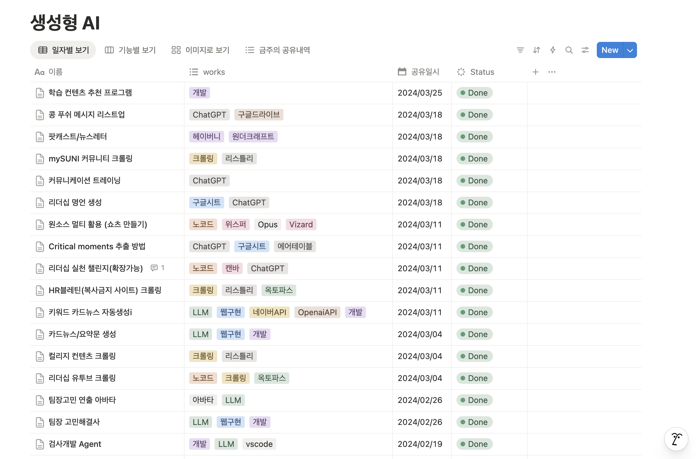

        <section class="slide ta orb-e" data-n="[톤 살짝 바꿔, 개인 이야기] 전략 2, 리더에게 다가가는 법입니다. 리더에게는 좀 다른 접근이 필요해요.

[잠시 멈춤, 자연스럽게] 제 이야기를 하나 할게요. 2023년에 AI를 공부하면서 이것저것 익혔어요. 그리고 2024년 1월부터 3월까지, 거의 매주 위클리 시간에 AI 활용 아이템을 1~2개씩 공유했습니다.

처음에는요 — 솔직히 분위기가 '이게 뭐야?' 였어요. [웃음 섞어] 관심도 별로 없었고요. 그런데 2개월쯤 지나니까 변화가 생겼어요. 리더가 먼저 호응하기 시작한 거예요. '이거 우리 팀에도 되나?' '이거 더 없어?' 그러면서 자연스럽게 주도적인 입지를 갖게 됐습니다.

[잠시 멈춤] 채용 쪽에서 좋은 사례가 있었는데, 1건당 35일 걸리던 채용 프로세스를 AI 에이전트로 돌렸더니 10,000건을 4시간에 처리했어요. 인사평가 소요시간도 80% 줄었고요. 이런 숫자를 리더 앞에 30초 보여주면 됩니다.

[톤 강조] 프레이밍이 중요해요. '안 쓰면 뒤처져요' — 이건 공포 프레이밍이에요, 안 통합니다. '이 고민이 해결돼요' — 이게 통합니다.

[킥] 보고서 5페이지 쓰는 것보다, 화면 앞에 30초 앉혀놓는 게 백 배 강력합니다.">
                          <div class="layer-mid" style="background:radial-gradient(ellipse at 60% 50%,rgba(212,165,116,0.18) 0%,transparent 40%);"></div>
                          <div class="tag">전략 2</div>
                          <h2><span class="em">보여주면</span> 움직인다</h2>
                
                          <!-- 상단 텍스트 -->
                          <p style="font-size:clamp(15px,1.3vw,19px);color:var(--g400);text-align:center;margin-top:16px;line-height:1.6;">매주 1~2개씩 AI 활용 아이템을 공유했습니다.<br>처음엔 <span style="color:var(--g500);">"이게 뭐야?"</span> — 3개월 뒤, <span style="color:var(--copper);">리더가 먼저 호응하기 시작했습니다.</span></p>
                
                          <!-- 이미지 -->
                          <div style="width: 100%; max-width: 780px; margin: 16px auto 0px; border-radius: var(--radius); overflow: hidden; box-shadow: rgba(0, 0, 0, 0.5) 0px 8px 32px, rgba(255, 255, 255, 0.06) 0px 0px 0px 1px;">
                            
                          </div>
                
                          <!-- 프레이밍 -->
                          
                
                          <div class="ref">Xie et al. (2025). Leader Communication Framing</div>
                        </section>
